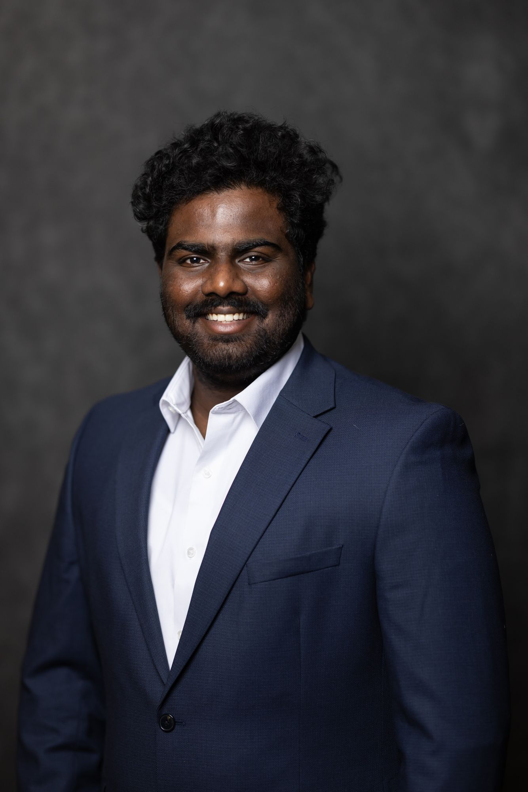

Applied ML/NLP · Full-Stack & Cloud Engineering
I build systems that aren't allowed to have a bad day.
Software engineer and researcher with an M.S. in Computer Science from the University of Minnesota. I split my time between backend/cloud engineering, NLP research, and — until recently — teaching machine learning.

About
A bit of background
I'm a software engineer at Mass Technologies, working across a multi-module healthcare operations platform — schema design, REST APIs, AWS infrastructure, and the data-integrity work that keeps a growing suite of clinical and administrative tools actually correct.
Before that, I spent two years as a graduate researcher studying how misinformation about transgender and nonbinary communities spreads on TikTok, building a pipeline that processed over a million videos with GPU-accelerated video analysis, OCR, and topic modeling. I've also built real-time data pipelines on AWS, and taught machine learning as adjunct faculty through August 2026.
I'm an AWS Certified Solutions Architect. Outside of work I build things for fun — agent-orchestration tools, a terminal I can drive from my phone, small language models fine-tuned on niche datasets — mostly to see what breaks.
- Based inMinneapolis / Duluth, MN
- EducationM.S. Computer Science, University of Minnesota
- CertificationAWS Certified Solutions Architect — Associate
- CurrentlySoftware Engineer, Mass Technologies
Experience
Where I've worked & taught
Software Engineer
Mass Technologies
Backend and cloud engineer on a multi-module healthcare operations platform used by hospital and clinical teams to manage assets, compliance, security, and facility workflows across a growing suite of interconnected services. I design and evolve PostgreSQL schemas and REST APIs, build and harden AWS infrastructure (IAM, networking, compute, monitoring), and do cross-service integration work to keep data consistent as the platform scales. I also contribute to CI/CD pipelines and security-hardening initiatives, and review code across the wider engineering team.
Adjunct Faculty
The College of St. Scholastica
Taught Programming II (Java) and Machine Learning for Data Science — object-oriented design, data-driven problem solving, and applied ML, with a hands-on, project-based approach.
Graduate Researcher & Teaching Assistant
University of Minnesota
Researched multi-modal misinformation on TikTok under Prof. Md Momen Bhuiyan, building data collection and analysis pipelines. TA'd Intro to Python, Natural Language Processing, and Parallel Programming.
Research Intern
IIITDM Kancheepuram & IIT Kanpur
Image/video optimization for IoT applications and a Python-based parser for virtual reconfigurable circuits; separately, statistical modeling of IVF success rates.
Projects
Selected work
TikTok Misinformation Pipeline
An automated research pipeline collecting and analyzing over a million TikTok videos to study how misinformation about transgender and nonbinary communities spreads — GPU-accelerated video processing, OCR text extraction, BERTopic modeling, and influence-network analysis.
MarketPulseRT
A real-time stock market data pipeline ingesting and analyzing live financial data with Kafka stream processing and AWS Glue/Athena for large-scale querying, with schema evolution and fault-tolerant streaming built in.
Bulldog-On-Board
A mobile app streamlining the transition process for newly admitted university students, with a Firebase backend for real-time auth and cloud storage and a Figma-driven UI for campus maps and event reminders.
Multilingual LLM Fine-Tuning
Fine-tuning LLaMA 2 and Mistral 7B on multilingual datasets with QLoRA and PEFT, evaluating text completion, question answering, and summarization across languages — including Telugu — under limited compute.
sweethome3d-mcp
A local MCP server that lets an LLM create and edit Sweet Home 3D floor plans directly — walls, rooms, furniture, and dimensions — by operating on the file format, without the app open.
AURORA (axis)
A machine-native execution graph language for autonomous AI agents — deterministic DAG compilation, capability-based security on every node, and self-healing execution via JSON Patch recovery, with a compact binary format for agent-to-agent communication.
NeuralFlow
A local-first desktop app for building multi-agent AI workflows visually — drag-and-drop orchestration over LangGraph and CrewAI, running entirely on-device with any model, no Docker or cloud required.
Tether
A self-hosted, mobile-optimized web terminal that mirrors your laptop's tmux sessions (or spawns fresh PTY shells) so you can monitor and drive a running terminal session from your phone — zero cloud dependencies.
Quant Finance Checklist
A self-hostable, real-time synced progress tracker for a 24-week quant finance study plan, with scheduled push notifications for the next uncompleted task — built to keep shared progress in sync across devices.
USMLE AI Research Suite
A three-part research effort on AI in USMLE preparation for international medical graduates: a multimodal multi-agent system for personalized study planning, a cross-sectional survey on AI tool adoption, and a systematic evaluation of LLM performance on USMLE-style questions.
Skills
Toolbox
Languages
Cloud & DevOps
Web & Mobile
Data & ML
AI & Agents
Web Platform & SEO
Get in touch